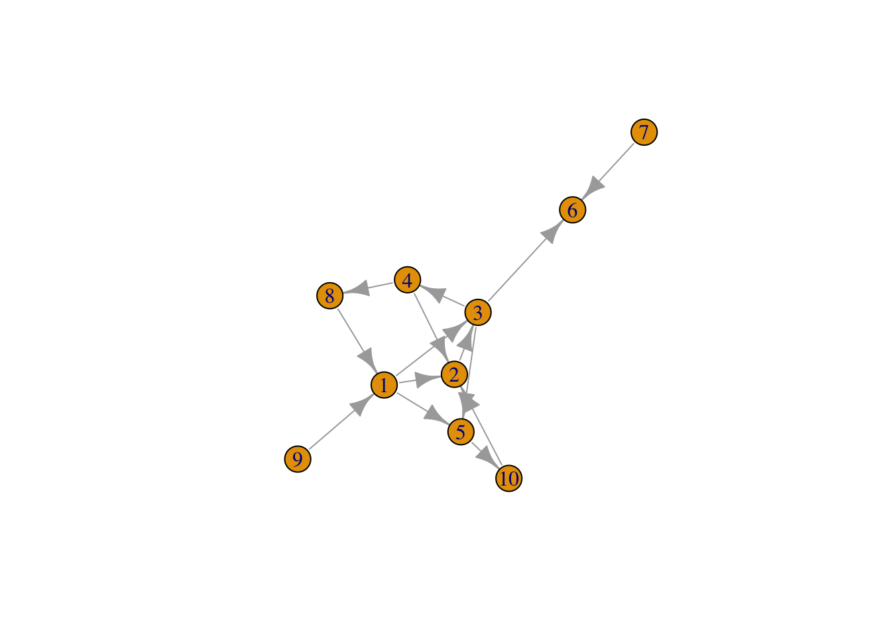
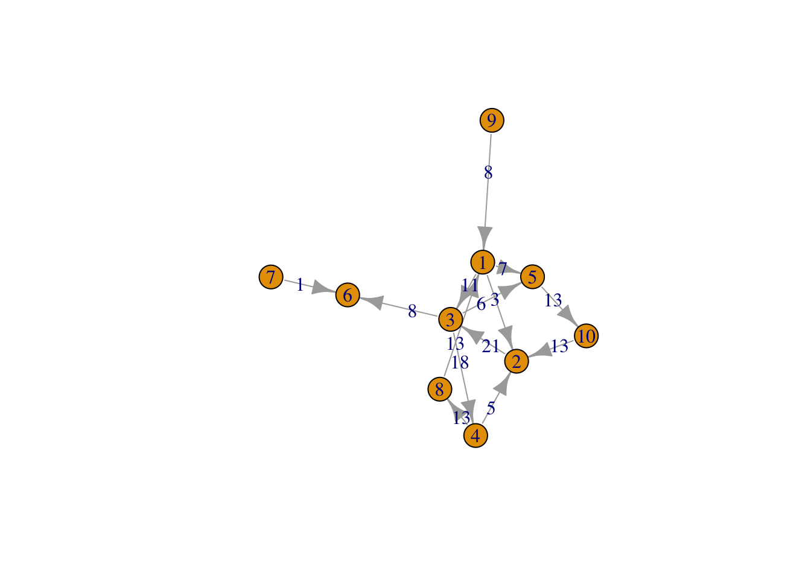

Capítulo 5 Analysis of the Networks to extract knowledge.
Goal of a SNA proyect
http://snap.stanford.edu/class/cs224w-2015/slides/06-applicationsI.pdf
Locate people in the network for…
- higher compensation
- positive performance evaluations
- more promotions
- more good ideas
Ego network is a special type of network consisting of one central node and all other nodes directly connected to it. The central node is known as ego, while the other surrounding nodes directly connected to it are known as alters.
https://medium.com/applied-data-science/the-google-vs-trick-618c8fd5359f
http://olizardo.bol.ucla.edu/classes/soc-111/lessons-winter-2022/5-lesson-egonet-metrics.html
Vamos a usar este grafo como ejemplo de las medidas de bondad del grafo.
IGRAPH 02c1640 D— 10 14 – + edges from 02c1640: [1] 1-> 2 1-> 3 2-> 3 3-> 4 3-> 5 1-> 5 4-> 2 3-> 6 4-> 8 8-> 1 [11] 9-> 1 10-> 2 7-> 6 5->10 IGRAPH 02c1640 D— 10 14 – 
Vértices, arcos.
[1] “igraph” + 10/10 vertices, from 02c1640: [1] 1 2 3 4 5 6 7 8 9 10 + 1/10 vertex, from 02c1640: [1] 1 + 14/14 edges from 02c1640: [1] 1-> 2 1-> 3 2-> 3 3-> 4 3-> 5 1-> 5 4-> 2 3-> 6 4-> 8 8-> 1 [11] 9-> 1 10-> 2 7-> 6 5->10 + 1/14 edge from 02c1640: [1] 1->2 [1] “igraph.vs” [1] “igraph.es”
5.1 Centrality
Importancia de los nodos en un grafo.
- Número de arcos de entrada-salida de los nodos.
- Redes con alta centralidad tienen pocos nodos con muchas conexiones.
- Redes con baja centralidad tienen muchos nodos con similar o menos conexiones.
- Ver https://en.wikipedia.org/wiki/Centrality#PageRank_centrality
5.2 Degree
Número de arcos conectados a un vértice. Señala la importancia de un vértice o el nivel de actividad del vértice en la red.
Cómo de central es un nodo en la red
Cuántos arcos de entrada-salida tiene o con cuántos nodos se conecta directamente via un arco.
centr_degree,igraph::degree
IGRAPH 02c1640 D— 10 14 –
+ edges from 02c1640:
[1] 1-> 2 1-> 3 2-> 3 3-> 4 3-> 5 1-> 5 4-> 2 3-> 6 4-> 8 8-> 1
[11] 9-> 1 10-> 2 7-> 6 5->10
 [1] 5 4 5 3 3 2 1 2 1 2
[1] 2 3 2 1 2 2 0 1 0 1
[1] 3 1 3 2 1 0 1 1 1 1
$res
[1] 5 4 5 3 3 2 1 2 1 2
[1] 5 4 5 3 3 2 1 2 1 2
[1] 2 3 2 1 2 2 0 1 0 1
[1] 3 1 3 2 1 0 1 1 1 1
$res
[1] 5 4 5 3 3 2 1 2 1 2
$centralization [1] 0.1358025
$theoretical_max [1] 162
5.3 Betweenness
Mide el grado en el que la información fluye a través de un vértice particular y su importancia relativa como un intermediario en la red.
Describe nodos que son conexiones clave o puentes entre grupos de nodos.
- El número de caminos más cortos que pasan por un nodo dado (medida relativa) - la suma de las longitudes de los caminos más cortos entre otros nodos pasando por el nodo, dividida por las longitudes de camino más cortas (no necesariamente a través del nodo) entre los otros nodos.
igraph::betweenness
[1] 14 14 25 11 6 0 0 6 0 6
- Por el vértice 6 no pasa ningún camino más corto entre dos vértices.
- Por el vértice 3 pasan 25 caminos más cortos entre dos vértices.
- …
5.4 Edge_betweenness
Similar al anterior pero teniendo en cuenta cada arco.
igraph::edge_betweenness

5.5 Closeness
Distancia a otros nodos. Un nodo con valor alto de este estimador es más central y puede difundir la información a muchos otros nodos.
Se obtiene como 1 divido por la suma de las distancias geodésicas desde un vértice al resto. Alcanzará su valor máximo cuando un vértice esté conectado a todos los demás. Longitud media de los caminos más cortos (geodésicos).
Mide cuantos pasos se requieren desde un vértice para alcanzar el resto de vértices de la red.
Caminos cortos entre vértices señalan que estos están cercanos unos a otros.
centr_clo,igraph::closeness
[1] 0.08333333 0.05882353 0.08333333 0.06250000 0.04000000 NaN [7] 1.00000000 0.06250000 0.05000000 0.04761905
5.6 Eigenvector
No todas las conexiones tienen la misma importancia - medida de la importancia de un nodo.
La medida Eigenvector Centrality se calcula como el autovalor de mayor módulo de la matriz de adyacencia que contiene los pesos.
a high score to vertices that either have a lot of connections, or are connected to someone with a lot of connections
Eigenvector Centrality:
eigen_centrality
$vector [1] 0.94446858 0.87756472 1.00000000 0.67054129 0.68544140 0.31214483 [7] 0.08943566 0.46273222 0.27060890 0.44783212
$value [1] 3.490161
$options \(options\)bmat [1] “I”
\(options\)n [1] 10
\(options\)which [1] “LA”
\(options\)nev [1] 1
\(options\)tol [1] 0
\(options\)ncv [1] 0
\(options\)ldv [1] 0
\(options\)ishift [1] 1
\(options\)maxiter [1] 1000
\(options\)nb [1] 1
\(options\)mode [1] 1
\(options\)start [1] 1
\(options\)sigma [1] 0
\(options\)sigmai [1] 0
\(options\)info [1] 0
\(options\)iter [1] 6
\(options\)nconv [1] 1
\(options\)numop [1] 20
\(options\)numopb [1] 0
\(options\)numreo [1] 15
5.7 Pagerank
Algoritmo de Google para realizar un ranking con la importancia de los resultados de la búsqueda.
Nodos son más importantes si tienen muchos enlaces de entrada.
page.rank
$vector [1] 0.09371203 0.18396681 0.20662720 0.08224805 0.10879979 0.10239617 [7] 0.02370367 0.05865910 0.02370367 0.11618350
$value [1] 1
$options NULL
5.9 Diameter
El máximo camino más corto entre cualquier par de nodos. En grafos muy grandes indica la posibilidad de que la información se difunda más o menos fácilmente. El algoritmo tiene costo \(O(n^3)\). En Twitter hay cientos de millones de usuarios,…
get_diameter
diameter- el camino más largo entre dos nodos.
[1] 6
5.10 Caminos y distancias
Distancia geodésica: El menor número de arcos a atravesar para conectar dos nodos.
[[1]] + 3/10 vertices, from 02c1640: [1] 1 5 10
[[1]] + 0/10 vertices, from 02c1640:
[,1] [,2] [,3] [,4] [,5] [,6] [,7] [,8] [,9] [,10][1,] 0 1 1 2 1 2 3 1 1 2 [2,] 1 0 1 1 2 2 3 2 2 1 [3,] 1 1 0 1 1 1 2 2 2 2 [4,] 2 1 1 0 2 2 3 1 3 2 [5,] 1 2 1 2 0 2 3 2 2 1 [6,] 2 2 1 2 2 0 1 3 3 3 [7,] 3 3 2 3 3 1 0 4 4 4 [8,] 1 2 2 1 2 3 4 0 2 3 [9,] 1 2 2 3 2 3 4 2 0 3 [10,] 2 1 2 2 1 3 4 3 3 0
Relacionado con distancias:
distance_table, mean_distance
5.11 Clustering
Whether your friends are likely to be friends.
Grupos: Subconjunto de vértices que comparten características en común.
- Una primera forma es buscar los triángulos en el grafo. *La medida de clustering (transitividad) es la frecuencia relativa de triángulos cerrados.
\[C=\frac{3*\mbox{ número de triángulos }}{\mbox{número de triples conectados}}\]
5.12 Transitivity
friends of friends to be friends and enemies of enemies to be enemies
Probabilidad de que vértices adyacentes de un vértice estén conectados - se denomina también coeficiente de agrupación o clustering.
transitivity,shortest_paths
5.13 Otras medidas y definiciones
Densidad: Número de conexiones respecto al total de conexiones posibles. Un grafo completo tiene una densidad igual a 1 -
edge_density.Popularidad: nodos que son centrales tienden a ser más populares.
Cliques: todos con todos -
clique_num(g, min=k)encuenta cliques con un mínimo de k vértices.Componentes: Una componente es el conjunto de vértices de la que tienen conexiones entre ellos. Una red puede tener varias componentes -
componentsNodos a distancia k -
random_walk.Hub, Authorities -
hub_score, authority.scoreun nodo se denomina hub tiene muchos enlaces de salida y se denomina authorities si tiene muchos de entrada.detección de comunidades:
cluster_edge_betweenness
5.14 SNA de Twitter
- El primer paso será extraer los términos usando las técnicas de text mining y crear una matriz de términos (DTM - Document Term Matrix:).
- Los documentos serían los tweets y los términos serían las palabras o grupos de palabras destacadas en los datos extraidos.
- Objetivo: Construir una red de términos (personas) basada en sus co-ocurrencias en los mismos tweets (pertenencia a los mismos grupos).